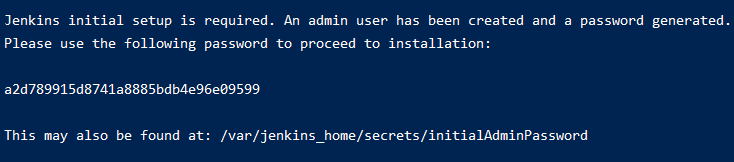
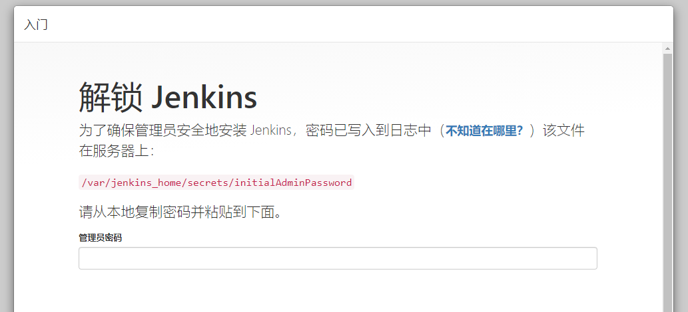
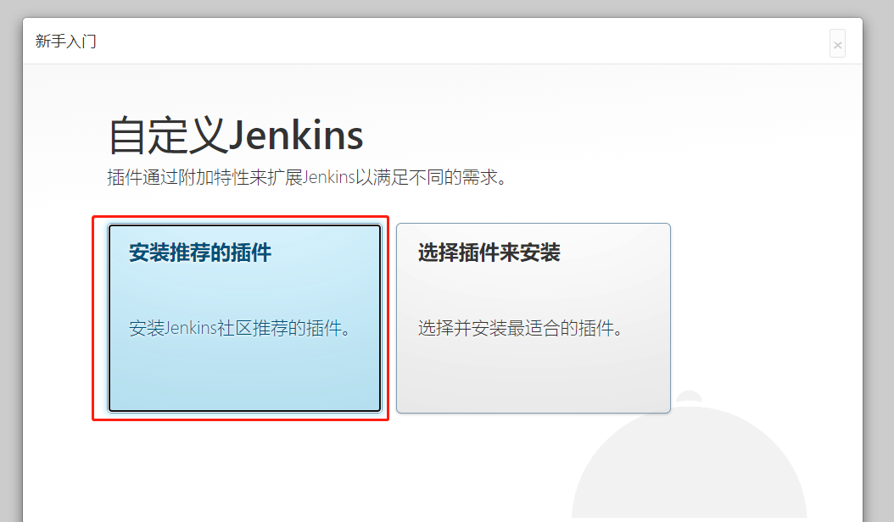
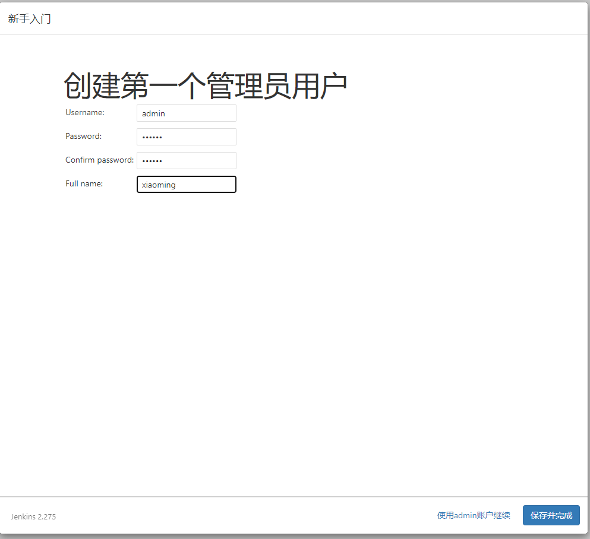
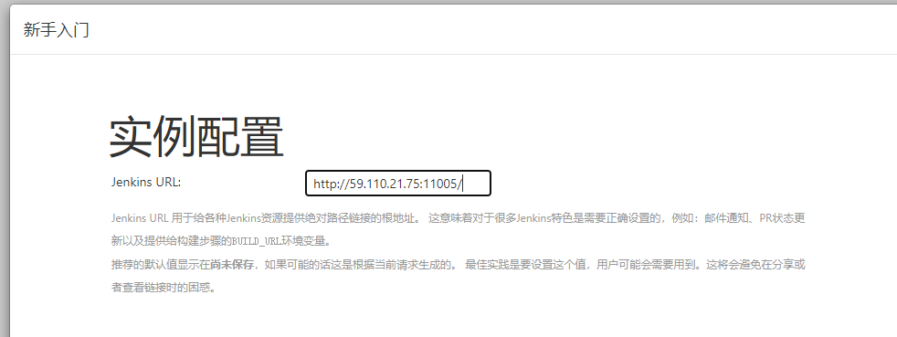
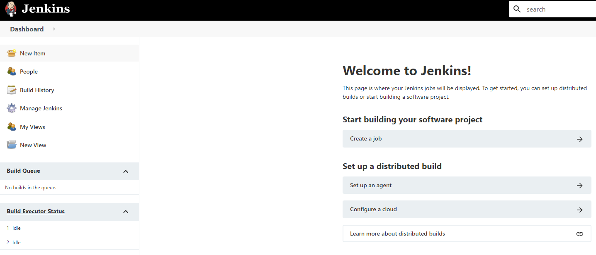

001-Linux安装jenkins
这里通过docker安装jenkins
1 使用docker启动jenkins
- 执行下面命令
docker run \ --name xiaoming_jenkins \ -itd \ -p 11005:8080 \ -p 50001:50000 \ jenkins/jenkins
执行完通过docker ps可以看到正在运行的容器
- 查看密码
执行下面名称查看启动日志
# 14a863e65582为运行时候的容器id
docker logs 14a863e65582
可以看到这么段话

大意是：jenkins有个admin的账号，密码在/var/jenkins_home/secrets/initialAdminPassword，将来需要用这个账号密码初次登陆jenkins
- 初始化
访问
http://59.110.21.75:11005/出现下面界面说明启动成功

输入上面获取到的密码，得到下面界面

选择“安装推荐的插件”，出现安装失败，很可能是源的问题
输入要创建的管理员账号

配置全局的访问地址，也是jenkins的回调地址，保持默认就可以，需要的话还可以在配置里面改，在配置和gitlab的时候需要用到这个地址

保存
